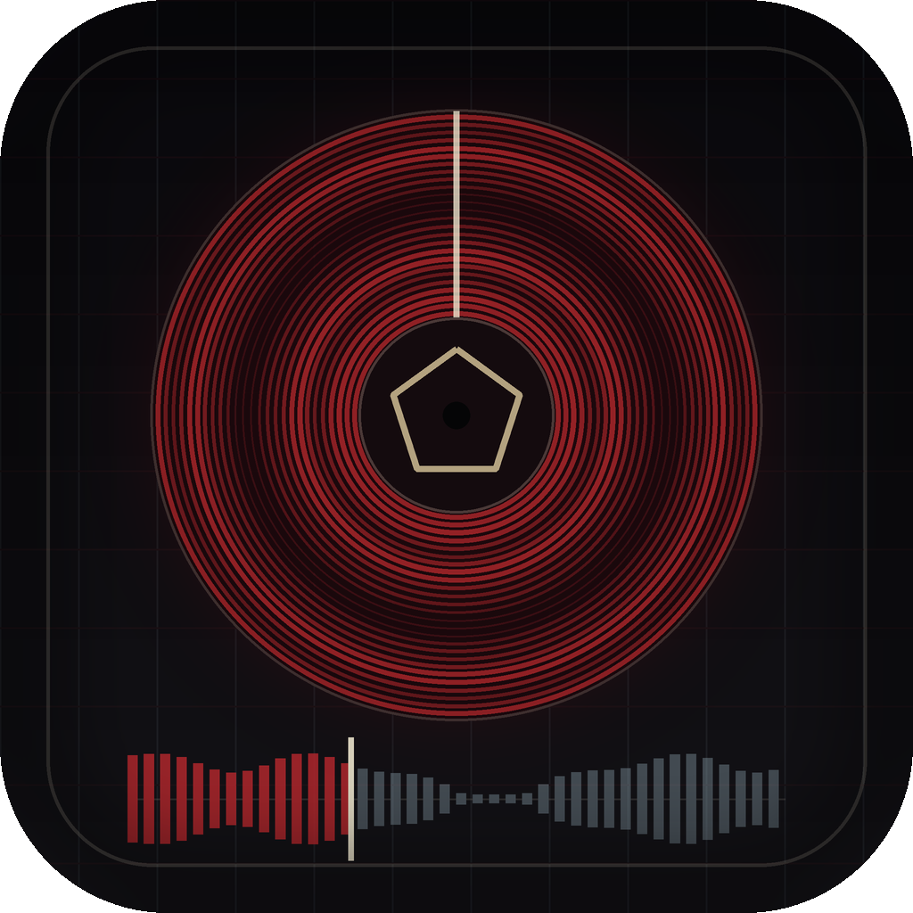
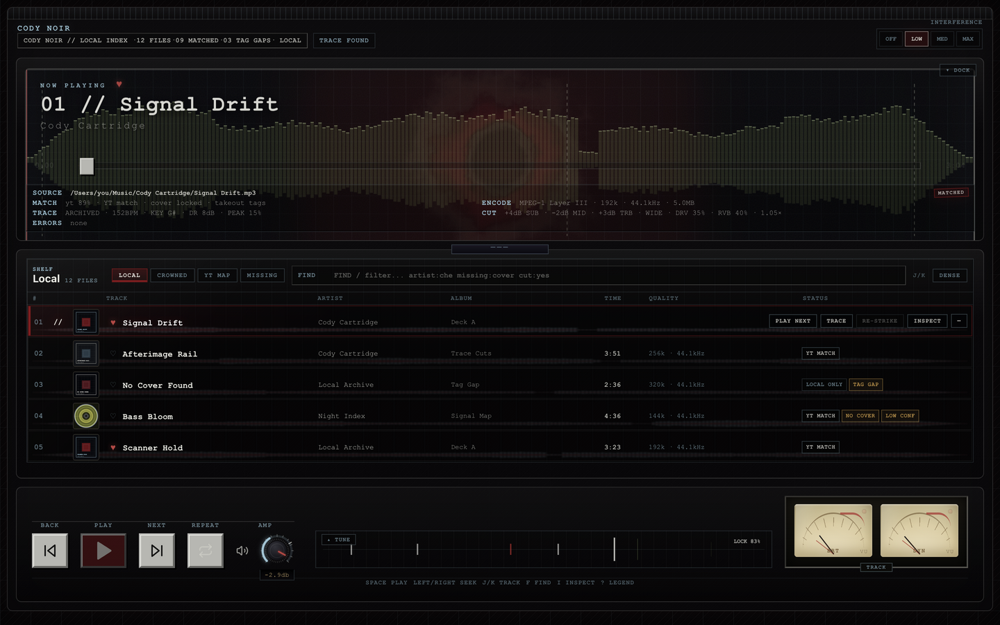
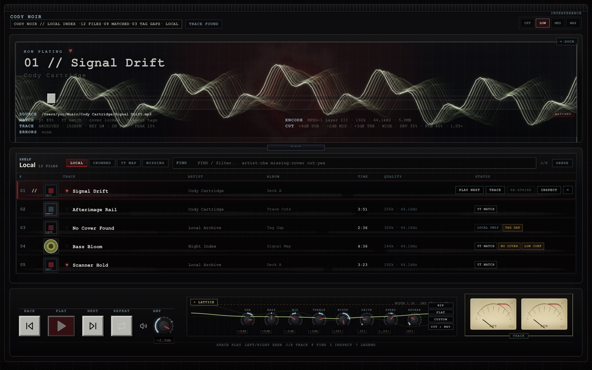
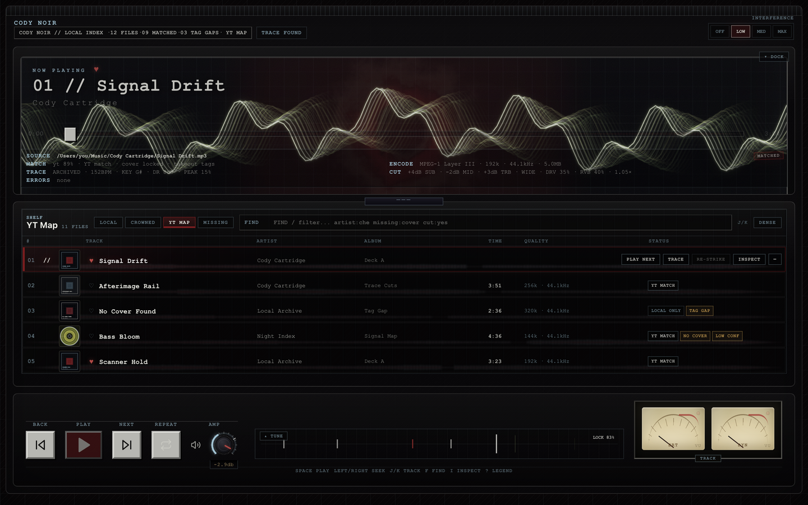
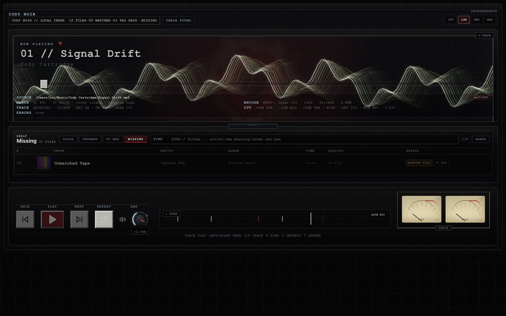

Every track gets a body
The deck decodes each file once and traces a spectral spine — a 240-column signature with BPM, key, and brightness. It becomes the seek bar, the shelf lanes, and generated pressing artwork.

Cody Noir // Local Index Cody CartridgeA Mac music player styled as a noir hardware deck. It decodes the files you already own, gives every track a visual body, and hands you a lathe to re-cut them — slowed, widened, driven, reverbed, and pressed back to disk. Nothing leaves your machine.
The deck decodes each file once and traces a spectral spine — a 240-column signature with BPM, key, and brightness. It becomes the seek bar, the shelf lanes, and generated pressing artwork.
A live Web Audio graph drives the spectrum bank, twin glass-face VU meters with true ballistics, a groove lattice measuring rhythm tightness, and a machined AMP stage.
A per-cartridge tone bench: EQ, stereo width, drive, reverb, and true varispeed with one-press EDITIONS (SLOWED+RVB, NIGHTCORE, NEXT ROOM). CUT presses your edit to a mastered WAV — rendered through the exact live chain.
Drop a YouTube Music Takeout export and the deck fuzzy-matches it against your files, scores confidence, and renders the unmatched remainder as a ghost library.
Play locks the signal into alignment. Pause freezes the trace and shows the song's structure. Skips wind the tape. Interference lives inside the instruments.
No network entitlement, no scraping, no telemetry. Analysis, artwork, matching, and exports all run on-device against files you already own.




Local-only by design. No network entitlement, no accounts, no telemetry, no scraping — playback, analysis, artwork generation, Takeout matching, and WAV exports all run on-device against files you already own. Play counts and traces live in local storage and never leave the machine.